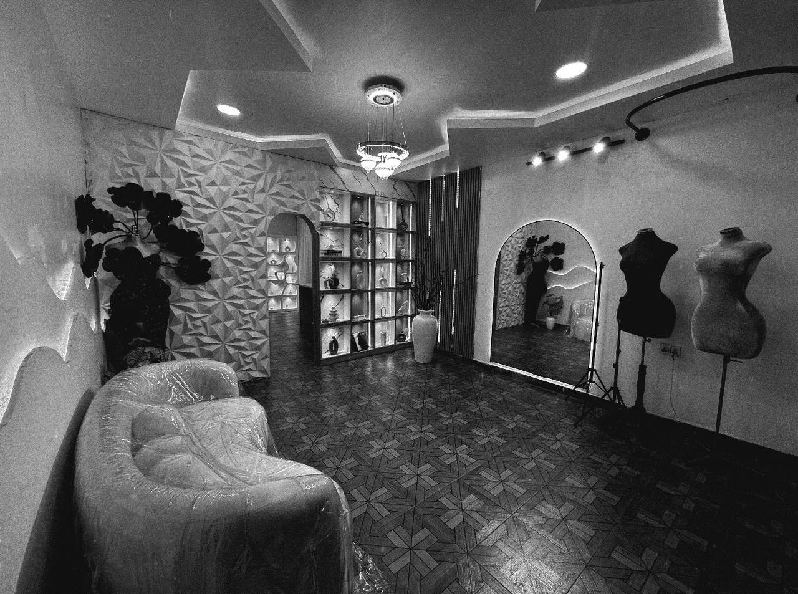

Foundation
Tools, machines, fabrics, stitches and workshop safety.
PROFESSIONAL FASHION TRAINING
A practical, six-month route from your first stitches to confident garment production and the foundations of a fashion business.

PROGRAMME OVERVIEW
Our Professional Fashion Design & Garment Production Programme is welcoming to beginners and aspiring professionals alike. You learn through doing, with hands-on guidance and room to grow your own creative voice.
WHAT YOU WILL LEARN
Tools, machines, fabrics, stitches and workshop safety.
Body measurements, pattern drafting and fabric cutting.
Blouses, gowns, shirts, sleeves, necklines and closures.
Trousers, two-piece outfits, native wear and advanced construction.
Industrial machines, alterations, finishing and client work.
Pricing, branding, marketing, customer service and business management.
OUTCOMES
Students develop practical garment-making confidence, familiarity with professional production tools and the business awareness to begin taking the next step.

YOUR NEXT STEP
Tell us a little about yourself and we’ll share the next steps for applying.